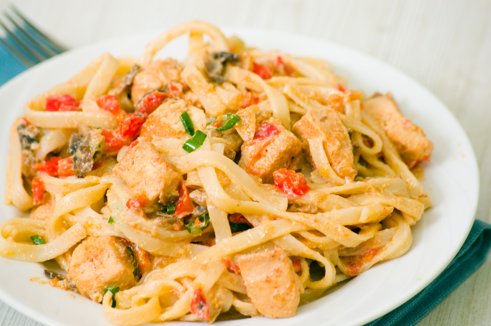
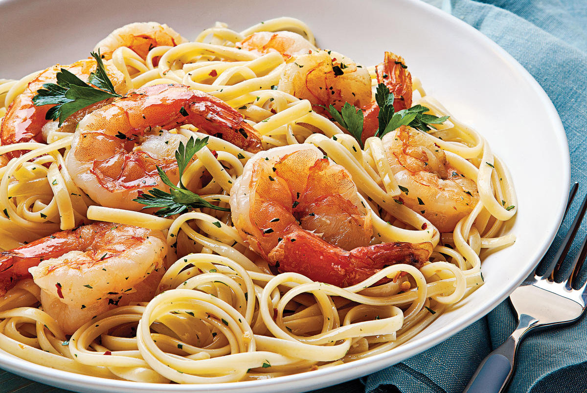
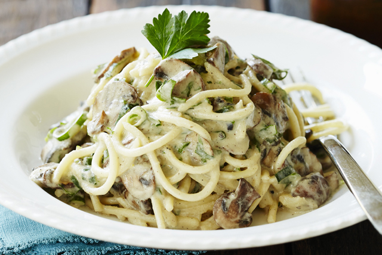
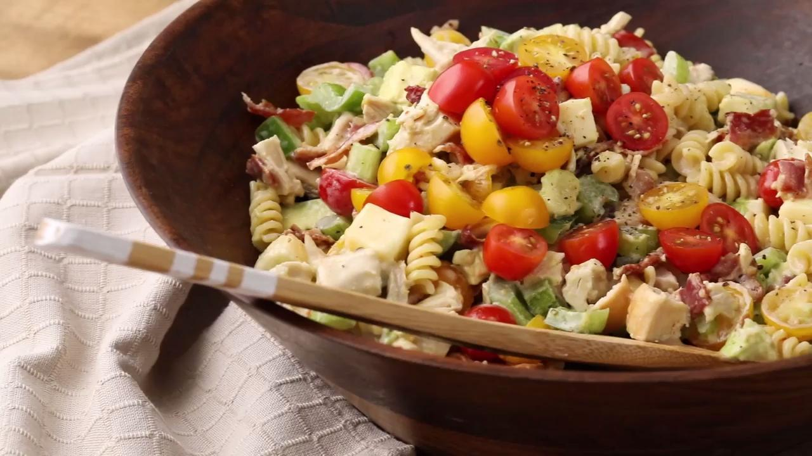

-

Creamy Cajun Chicken Pasta
×Creamy Cajun Chicken Pasta
Ingredients 4 ounces linguine pasta
2 boneless, skinless chicken breast halves, sliced into thin strips
2 teaspoons Cajun seasoning
2 tablespoons butter
1 green bell pepper, chopped
½ red bell pepper, chopped
4 fresh mushrooms, sliced
1 green onion, minced
1 ½ cups heavy cream
¼ teaspoon dried basil
¼ teaspoon lemon pepper
¼ teaspoon salt
⅛ teaspoon garlic powder
⅛ teaspoon garlic powder
2 tablespoons grated Parmesan cheeseDirections Bring a large pot of lightly salted water to a boil. Add linguini pasta, and cook for 8 to 10 minutes, or until al dente; drain.
Meanwhile, place chicken and Cajun seasoning in a bowl, and toss to coat.
In a large skillet over medium heat, saute chicken in butter until no longer pink and juices run clear, about 5 to 7 minutes. Add green and red bell peppers, sliced mushrooms and green onions; cook for 2 to 3 minutes. Reduce heat, and stir in heavy cream. Season the sauce with basil, lemon pepper, salt, garlic powder and ground black pepper, and heat through.
In a large bowl, toss linguini with sauce. Sprinkle with grated Parmesan cheese. -

Shrimp Scampi with Pasta
×Shrimp Scampi with Pasta
Ingredients 1 (16 ounce) package linguine pasta
2 tablespoons butter
2 tablespoons extra-virgin olive oil
2 shallots, finely diced
2 cloves garlic, minced
1 pinch red pepper flakes (optional)
1 pound shrimp, peeled and deveined
1 pinch kosher salt and freshly ground pepper
1/2 cup dry white wine
1 lemon, juiced
2 tablespoons butter
2 tablespoons extra-virgin olive oil
1/4 cup finely chopped fresh parsley leaves
1 teaspoon extra-virgin olive oil, or to tasteDirections Bring a large pot of salted water to a boil; cook linguine in boiling water until nearly tender, 6 to 8 minutes. Drain.
Melt 2 tablespoons butter with 2 tablespoons olive oil in a large skillet over medium heat. Cook and stir shallots, garlic, and red pepper flakes in the hot butter and oil until shallots are translucent, 3 to 4 minutes. Season shrimp with kosher salt and black pepper; add to the skillet and cook until pink, stirring occasionally, 2 to 3 minutes. Remove shrimp from skillet and keep warm.
Pour white wine and lemon juice into skillet and bring to a boil while scraping the browned bits of food off of the bottom of the skillet with a wooden spoon. Melt 2 tablespoons butter in skillet, stir 2 tablespoons olive oil into butter mixture, and bring to a simmer. Toss linguine, shrimp, and parsley in the butter mixture until coated; season with salt and black pepper. Drizzle with 1 teaspoon olive oil to serve. -

Creamy Mushroom Pasta
×Creamy Mushroom Pasta
Ingredients 2 tablespoons olive oil
3/4 pound fresh white mushrooms, sliced
1/4 pound fresh shiitake mushrooms, stemmed and sliced
salt and ground black pepper to taste
2 cloves garlic, minced
2 fluid ounces sherry
1 cup chicken stock
1 cup heavy whipping cream
8 ounces fettuccine pasta
1 1/2 teaspoons chopped fresh thyme
1 1/2 teaspoons chopped fresh chives
1 1/2 teaspoons chopped fresh tarragon
9 tablespoons freshly shredded Parmigiano-Reggiano cheese, dividedDirections Heat olive oil in a large skillet over medium heat. Cook and stir white and shiitake mushrooms in the hot oil with a pinch of salt until until the juice from the mushrooms evaporates and the mushrooms are browned, about 10 minutes.
Stir garlic into mushrooms and cook for 1 minute; pour in sherry and cook until wine is nearly evaporated. Mix chicken stock into mushroom mixture; season with salt and black pepper. Bring to a simmer, reduce heat, and cook until slightly thickened, about 5 minutes.
Pour cream into mushroom mixture, stir to combine, and simmer for 5 minutes. Mixture will foam and thicken slightly.
Fill a large pot with lightly salted water and bring to a rolling boil. Stir in the fettuccine, bring back to a boil, and cook pasta over medium heat until cooked through but still firm to the bite, about 8 minutes. Drain but do not rinse pasta; transfer to a large serving bowl and keep warm.
Stir thyme, chives, and tarragon into mushroom sauce and turn off heat; mix 1/2 cup Parmigiano-Reggiano cheese into sauce until cheese has melted.
Pour all the mushroom sauce and half the mushrooms over pasta, reserving about half the mushrooms in the skillet. Toss pasta in sauce until coated; top with remaining mushrooms and remaining 1 tablespoon Parmigiano-Reggiano cheese for garnish. -

Chicken Club Pasta Salad
×Chicken Club Pasta Salad
Ingredients 8 ounces corkscrew-shaped pasta
¾ cup Italian-style salad dressing
¼ cup mayonnaise
2 cups chopped, cooked rotisserie chicken
12 slices crispy cooked bacon, crumbled
1 cup cubed Muenster cheese
1 cup chopped celery
1 cup chopped green bell pepper
8 ounces cherry tomatoes, halved
1 avocado - peeled, pitted, and choppedDirections Bring a large pot of lightly salted water to a boil. Cook pasta in the boiling water, stirring occasionally until cooked through but firm to the bite, 10 to 12 minutes. Drain and rinse under cold water.
Whisk Italian-style dressing and mayonnaise together in a large bowl. Stir pasta, chicken, bacon, Muenster cheese, celery, green bell pepper, cherry tomatoes, and avocado into dressing until evenly coated.